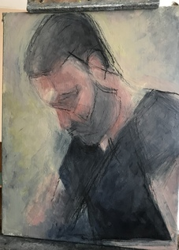

miguel [punto] ibanezberganza [chiocciola] imtlucca [punto] com
(italiano qua)
|
 |
|
[…] sólo algún instante de mí podrá sobrevivir en el otro. J. L. Borges, Borges y yo. |
|
I am (apparently) a researcher in statistical inference, with interests in cognitive science and philosophy of science, and with a background in quantum and statistical physics. I am assistant professor at the Networks Unit of the Scuola IMT Alti Studi Lucca, where I teach information theory and statistical inference –also as part of the didactic program of the National PhD in Artificial Intelligence. Together with my colleagues of the Models, Inferences, and Decisions Unit (MInD) at IMT-Lucca, I organise the outreach project Scienza di Agatopia, a discussion forum regarding the relation between science and society. Since my arrival at IMT-Lucca, I am pursuing novel research lines essentially consisting of the development of statistical inference and (information-theory grounded) data analysis methods (like statistical validation of clustering algorithms ([Ar 2026]), or null models of complex networks ([Sa 2025],[diV 2026])), with applcations to the social sciences and especially to psychometric data ([Ar 2026], [Ar 2026b]). The main achievements of my (erratic) early career are summarised here. Find here a list of publications, and here some info about my teaching activity. References
|